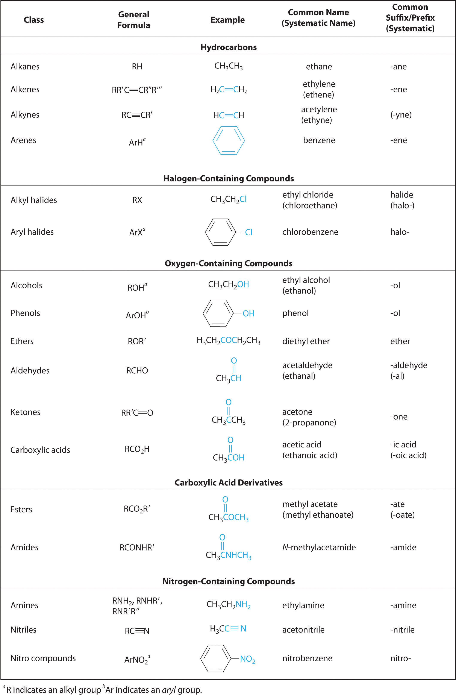
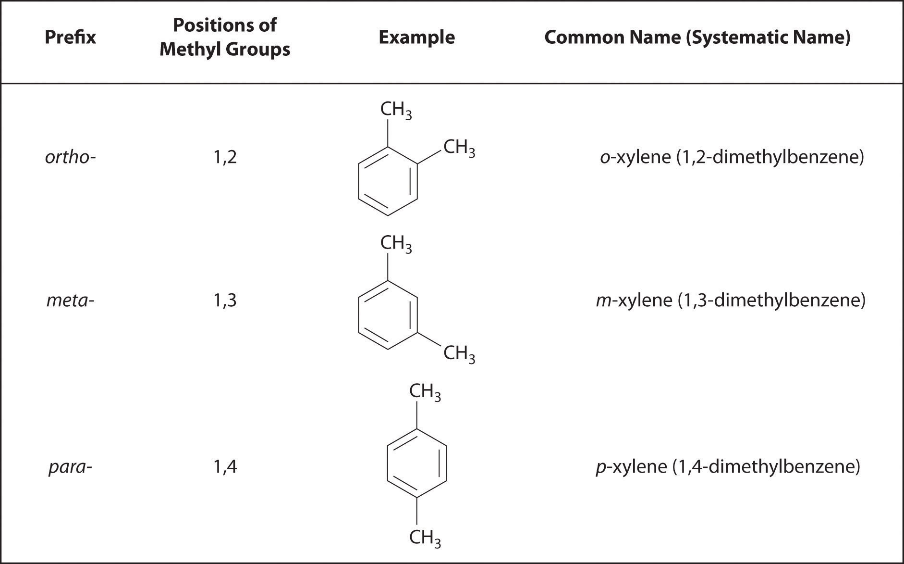

In Chapter 2 "Molecules, Ions, and Chemical Formulas" and Chapter 5 "Energy Changes in Chemical Reactions", you were introduced to several structural units that chemists use to classify organic compounds and predict their reactivities. These functional groupsThe structural units that chemists use to classify organic compounds and predict their reactivities under a given set of conditions., which determine the chemical reactivity of a molecule under a given set of conditions, can consist of a single atom (such as Cl) or a group of atoms (such as CO2H). The major families of organic compounds are characterized by their functional groups. Figure 24.1 "Major Classes of Organic Compounds" summarizes five families introduced in earlier chapters, gives examples of compounds that contain each functional group, and lists the suffix or prefix used in the systematic nomenclature of compounds that contain each functional group.
Figure 24.1 Major Classes of Organic Compounds
The first family listed in Figure 24.1 "Major Classes of Organic Compounds" is the hydrocarbons. These include alkanes, with the general molecular formula CnH2n+2 where n is an integer; alkenes, represented by CnH2n; alkynes, represented by CnH2n−2; and arenes. Halogen-substituted alkanes, alkenes, and arenes form a second major family of organic compounds, which include the alkyl halides and the aryl halides. Oxygen-containing organic compounds, a third family, may be divided into two main types: those that contain at least one C–O bond, which include alcohols, phenols (derivatives of benzene), and ethers, and those that contain a carbonyl group (C=O), which include aldehydes, ketones, and carboxylic acids. Carboxylic acid derivatives, the fourth family listed, are compounds in which the OH of the –CO2H functional group is replaced by either an alkoxy (–OR) group, producing an ester, or by an amido (–NRR′, where R and R′ can be H and/or alkyl groups), forming an amide. Nitrogen-containing organic compounds, the fifth family, include amines; nitriles, which have a C≡N bond; and nitro compounds, which contain the –NO2 group.
As you learned in Chapter 2 "Molecules, Ions, and Chemical Formulas", Section 2.4 "Naming Covalent Compounds", the systematic nomenclature of organic compounds indicates the positions of substituents using the lowest numbers possible to identify their locations in the carbon chain of the parent compound. If two compounds have the same systematic name, then they are the same compound. Although systematic names are preferred because they are unambiguous, many organic compounds are known by their common names rather than their systematic names. Common nomenclature uses the prefix form—for a compound that contains no carbons other than those in the functional group, and acet—for those that have one carbon atom in addition [two in the case of acetone, (CH3)2C=O]. Thus methanal and ethanal, respectively, are the systematic names for formaldehyde and acetaldehyde.
Recall that in the systematic nomenclature of aromatic compounds, the positions of groups attached to the aromatic ring are indicated by numbers, starting with 1 and proceeding around the ring in the direction that produces the lowest possible numbers. For example, the position of the first CH3 group in dimethyl benzene is indicated with a 1, but the second CH3 group, which can be placed in any one of three positions, produces 1,2-dimethylbenzene, 1,3-dimethylbenzene, or 1,4-dimethylbenzene (Figure 24.2 "Common Nomenclature for Aromatic Ring Substitutions"). In common nomenclature, in contrast, the prefixes ortho-, meta-, and para- are used to describe the relative positions of groups attached to an aromatic ring. If the CH3 groups in dimethylbenzene, whose common name is xylene, are adjacent to each other, the compound is commonly called ortho-xylene, abbreviated o-xylene. If they are across from each other on the ring, the compound is commonly called para-xylene or p-xylene. When the arrangement is intermediate between those of ortho- and para- compounds, the name is meta-xylene or m-xylene.
Figure 24.2 Common Nomenclature for Aromatic Ring Substitutions
We begin our discussion of the structure and reactivity of organic compounds by exploring structural variations in the simple saturated hydrocarbons known as alkanes. These compounds serve as the scaffolding to which the various functional groups are most often attached.
Functional groups are structural units that determine the chemical reactivity of a molecule under a given set of conditions. Organic compounds are classified into several major categories based on the functional groups they contain. In the systematic names of organic compounds, numbers indicate the positions of functional groups in the basic hydrocarbon framework. Many organic compounds also have common names, which use the prefix form—for a compound that contains no carbons other than those in the functional group and acet—for those that have one additional carbon atom.
Can two substances have the same systematic name and be different compounds?
Is a carbon–carbon multiple bond considered a functional group?